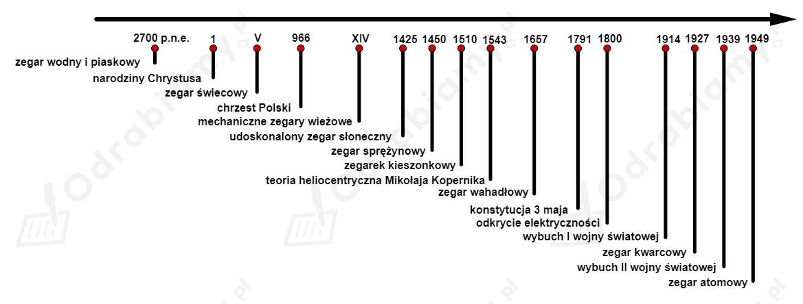

1.

2.
Mechanizm zegara z wychwytem polegał na napędzaniu mechanizmu wychwytowego przez drgające wahadło. Mechanizm ten kontrolował ruch przekładni chodu dzięki jej zwalnianiu i blokowaniu w stałych odstępach czasowych.
3.
Najciekawsze zegary w Polsce:
4.
W XVIII wieku głównym sposobem nawigacji morskiej było korzystanie z wykresów Ziemi i nieba oraz siatki współrzędnych. Określenie własnych współrzędnych nie było jednak prosta sprawą. W wyznaczeniu szerokości geograficznej pomagały Słońce, Księżyc i gwiazdy. Wraz ze zmianą szerokości geograficznej zmienialiśmy swoje położenie między równikiem, a biegunem co zmieniało obserwowaną półsferę niebieską. Z długością geograficzną było trudniej, bo obraz nieba nie zmieniał się kiedy podróżowaliśmy po równoleżniku. Przydatne były jednak dokładne zegary. Położenie statku można było określić porównując czas lokalny (słoneczny) z czasem w danym punkcie odniesienia odmierzanym przez zegar (np. na zerowym południku).
5.
Zegar kwarcowy wykorzystuje drgania kryształu kwarcu zliczane przez układy cyfrowe. Drgania kryształu mają dokładnie ustaloną częstotliwość, co gwarantuje bardzo dużą dokładność mechanizmu takiego zegara.